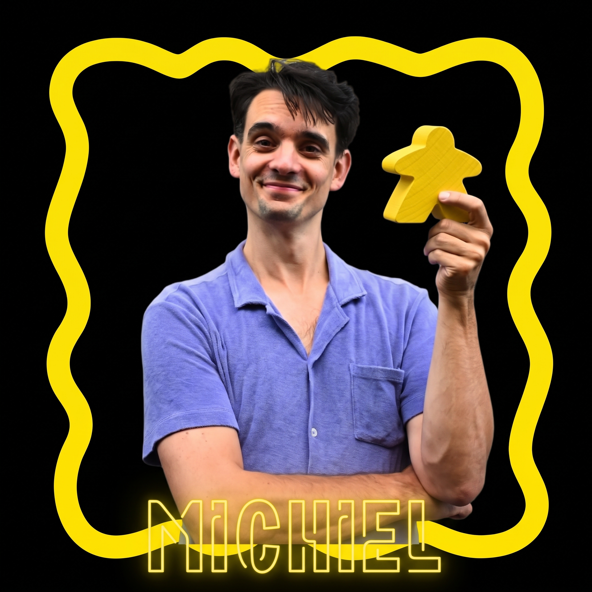
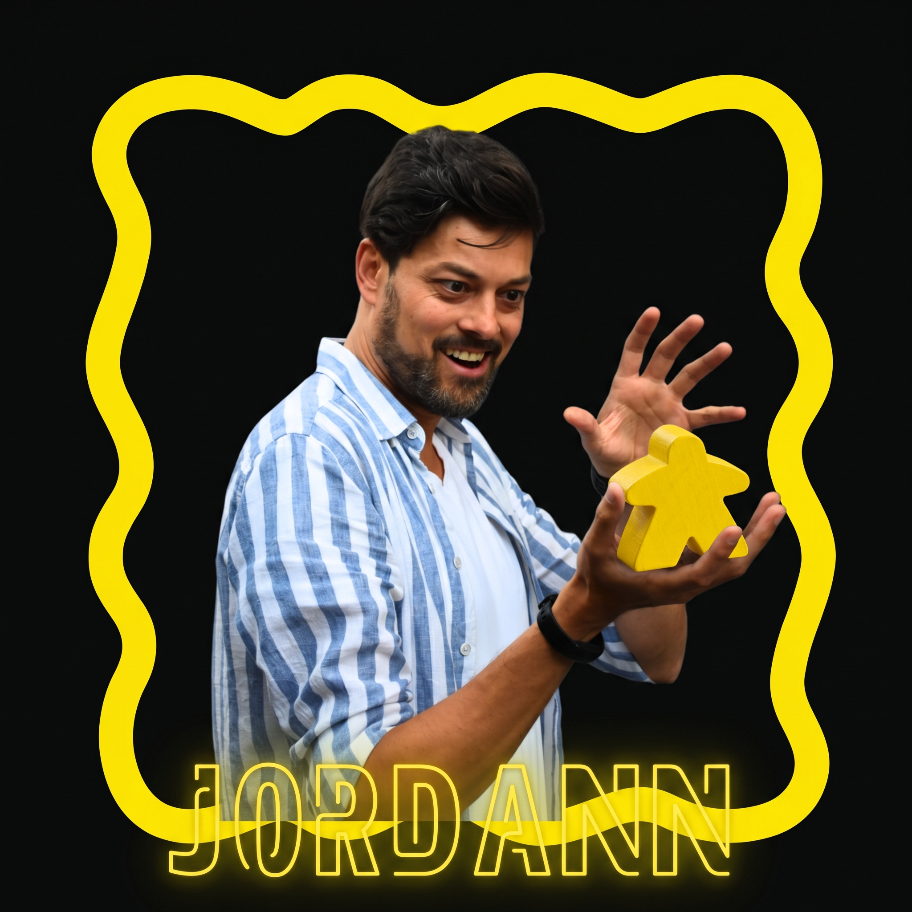
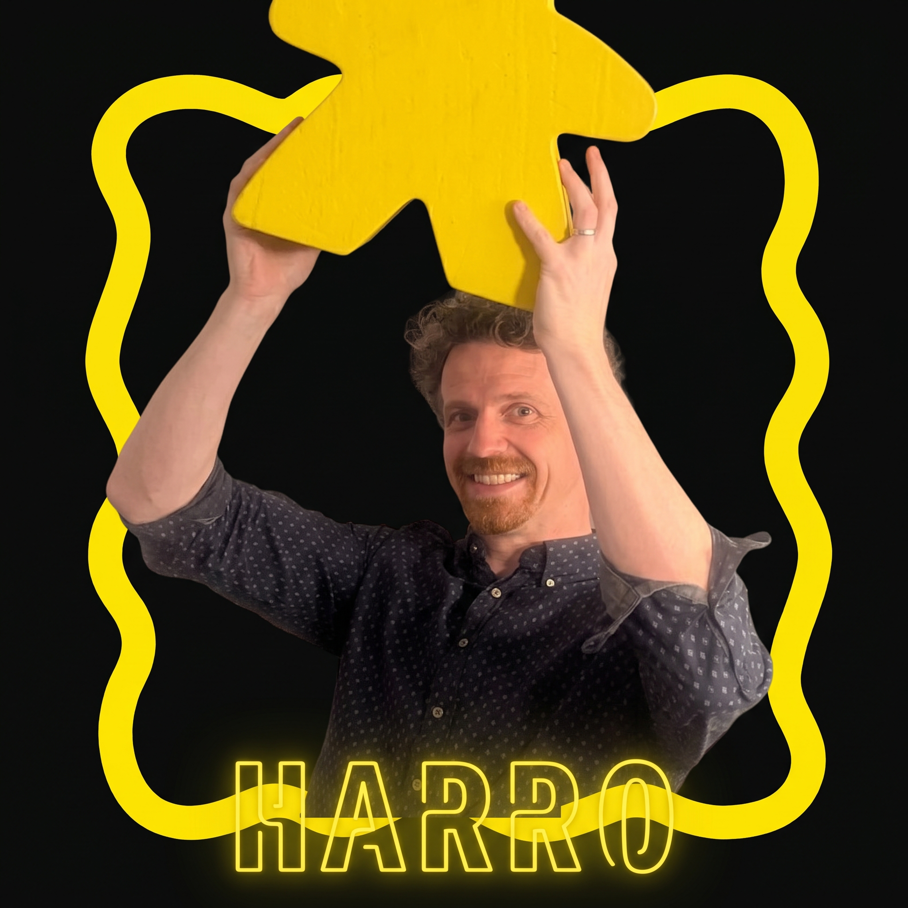

Wij brengen de ultieme cross-over tussen de hilariteit van De Lama's en je wekelijkse spellenavond. Op het podium staan vier improvisatiehelden én die-hard bordspelnerds. Verwacht vlijmscherpe, onvoorspelbare scènes die doorspekt zijn met herkenbare bordspelreferenties. We gooien altijd 6 en de combo's aan grappen zorgen ervoor dat de engine builder aan lachen zo ontspoort dat je vergeet dat je aan het einde van de ronde je werkers nog moet voeden!
Geen paniek: de scènes duren gelukkig een stuk korter dan de speluitleg van Twilight imperium, en we beloven dat we de show niet stil leggen vanwege analysis paralysis.

De man die meer dan 300 regelboeken helemaal uit zijn hoofd kent.

De man die zelfs college geeft over zijn statistieken van BGstats.

De man wiens analyse nooit tot paralyses leidt, maar altijd leid tot de winst.
De man die vaker praat over bordgames dan dat hij ze speelt.
We treden op op feesten en partijen, bordspelavonden, bedrijfsfeesten (voornamelijk van bordspeluitgevers) en natuurlijk spelen we graag een spelletje mee nadat we hebben opgetreden.
Boek Ons